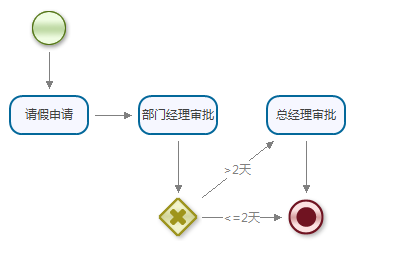

Step1 定义流程
使用eclipse插件创建流程定义,如:
<?xml version="1.0" encoding="UTF-8" standalone="no"?> <process displayName="请假流程" instanceUrl="/flow/leave/all" name="leave"> <start displayName="start1" layout="27,19,-1,-1" name="start1"> <transition g="" name="transition1" offset="0,0" to="apply"/> </start> <end displayName="end1" layout="284,208,-1,-1" name="end1"/> <task assignee="apply.operator" displayName="请假申请" form="/flow/leave/apply" layout="5,104,-1,-1" name="apply" performType="ANY"> <transition g="" name="transition2" offset="0,0" to="approveDept"/> </task> <task assignee="approveDept.operator" displayName="部门经理审批" form="/flow/leave/approveDept" layout="134,104,-1,-1" name="approveDept" performType="ANY"> <transition g="" name="transition3" offset="0,0" to="decision1"/> </task> <decision displayName="decision1" expr="day > 2 ? 'transition5' : 'transition4'" layout="156,208,-1,-1" name="decision1"> <transition displayName="<=2天" g="" name="transition4" offset="0,0" to="end1"/> <transition displayName=">2天" g="" name="transition5" offset="0,0" to="approveBoss"/> </decision> <task assignee="approveBoss.operator" displayName="总经理审批" form="/flow/leave/approveBoss" layout="262,104,-1,-1" name="approveBoss" performType="ANY"> <transition g="" name="transition6" offset="0,0" to="end1"/> </task> </process>
Step2 部署流程
流程部署使用ProcessService的deploy方法.参数为InputStream.使用StreamHelper帮助类[org.snaker.engine.helper.StreamHelper]可以很方便 操作流，如:
//几种部署流程方法
snakerEngine.process().deploy(StreamHelper.getStreamFromClasspath("leave.snaker"));
snakerEngine.process().deploy(StreamHelper.getStreamFromString("流程定义的xml字符串"));
snakerEngine.process().deploy(StreamHelper.getStreamFromFile(new File("流程定义文件的绝对路径")));
//重新部署流程方法
snakerEngine.process().redeploy(String processId, InputStream input);
//卸载流程
snakerEngine.process().undeploy(String processId);
Step3 启动流程
流程启动使用startInstanceById、startInstanceByName方法.
Map<String, Object> args = new HashMap<String, Object>();
args.put("apply.operator", new String[]{"snaker"});
//根据流程定义id启动流程,可接收1~3个参数，分别为流程定义id、处理人、变量参数
snakerEngine.startInstanceById(processId, "snaker", args);
//根据流程定义name启动流程.可接收1~4个参数，分别为流程定义name、版本号、处理人、变量参数
snakerEngine.startInstanceByName(String name, Integer version, String operator, Map<String, Object> args);
Step4 任务处理
处理任务使用executeTask方法.可接收1~3个参数，分别为任务id、处理人、变量参数
Map<String, Object> args = new HashMap<String, Object>();
args.put("approveDept.operator", new String[]{"admin"});
List<Task> tasks = snakerEngine.query().getActiveTasks(new QueryFilter().setOperator("admin"));
for(Task task : tasks) {
snakerEngine.executeTask(task.getId(), "admin", args);
}
流程引擎API参考:SnakerEngine
/** * 获取process服务 * @return IProcessService 流程定义服务 */ public IProcessService process(); /** * 获取查询服务 * @return IQueryService 常用查询服务 */ public IQueryService query(); /** * 获取实例服务 * @return IQueryService 流程实例服务 */ public IOrderService order(); /** * 获取任务服务 * @return ITaskService 任务服务 */ public ITaskService task(); /** * 获取管理服务 * @return IManagerService 管理服务 */ public IManagerService manager(); /** * 根据流程定义ID启动流程实例 * @param id 流程定义ID * @return Order 流程实例 * @see #startInstanceById(String, String, Map) */ public Order startInstanceById(String id); /** * 根据流程定义ID，操作人ID启动流程实例 * @param id 流程定义ID * @param operator 操作人ID * @return Order 流程实例 * @see #startInstanceById(String, String, Map) */ public Order startInstanceById(String id, String operator); /** * 根据流程定义ID，操作人ID，参数列表启动流程实例 * @param id 流程定义ID * @param operator 操作人ID * @param args 参数列表 * @return Order 流程实例 */ public Order startInstanceById(String id, String operator, Map<String, Object> args); /** * 根据流程名称启动流程实例 * @param name 流程定义名称 * @return Order 流程实例 */ public Order startInstanceByName(String name); /** * 根据流程名称、版本号启动流程实例 * @param name 流程定义名称 * @param version 版本号 * @return Order 流程实例 */ public Order startInstanceByName(String name, Integer version); /** * 根据流程名称、版本号、操作人启动流程实例 * @param name 流程定义名称 * @param version 版本号 * @param operator 操作人 * @return Order 流程实例 */ public Order startInstanceByName(String name, Integer version, String operator); /** * 根据流程名称、版本号、操作人、参数列表启动流程实例 * @param name 流程定义名称 * @param version 版本号 * @param operator 操作人 * @param args 参数列表 * @return Order 流程实例 */ public Order startInstanceByName(String name, Integer version, String operator, Map<String, Object> args); /** * 根据任务主键ID执行任务 * @param taskId 任务主键ID * @return List<Task> 任务集合 * @see #executeTask(String, String, Map) */ public List<Task> executeTask(String taskId); /** * 根据任务主键ID，操作人ID执行任务 * @param taskId 任务主键ID * @param operator 操作人主键ID * @return List<Task> 任务集合 * @see #executeTask(String, String, Map) */ public List<Task> executeTask(String taskId, String operator); /** * 根据任务主键ID，操作人ID，参数列表执行任务 * @param taskId 任务主键ID * @param operator 操作人主键ID * @param args 参数列表 * @return List<Task> 任务集合 */ public List<Task> executeTask(String taskId, String operator, Map<String, Object> args); /** * 根据任务主键ID，操作人ID，参数列表执行任务，并且根据nodeName跳转到任意节点 * 1、nodeName为null时，则跳转至上一步处理 * 2、nodeName不为null时，则任意跳转，即动态创建转移 * @param taskId 任务主键ID * @param operator 操作人主键ID * @param args 参数列表 * @param nodeName 跳转的节点名称 * @return List<Task> 任务集合 */ public List<Task> executeAndJumpTask(String taskId, String operator, Map<String, Object> args, String nodeName); /** * 根据流程实例ID，操作人ID，参数列表按照节点模型model创建新的自由任务 * @param orderId 流程实例id * @param operator 操作人id * @param args 参数列表 * @param model 节点模型 * @return List<Task> 任务集合 */ public List<Task> createFreeTask(String orderId, String operator, Map<String, Object> args, WorkModel model);
流程定义API参考:IProcessService
/** * 保存流程定义 * @param process 流程定义对象 */ void saveProcess(Process process); /** * 根据主键ID获取流程定义对象 * @param id 流程定义id * @return Process 流程定义对象 */ Process getProcessById(String id); /** * 根据流程name获取流程定义对象 * @param name 流程定义名称 * @return Process 流程定义对象 */ Process getProcessByName(String name); /** * 根据流程name、version获取流程定义对象 * @param name 流程定义名称 * @param version 版本号 * @return Process 流程定义对象 */ Process getProcessByVersion(String name, Integer version); /** * 根据给定的参数列表args分页查询process * @param page 分页对象 * @param filter 查询过滤器 * @return List<Process> 流程定义对象集合 */ List<Process> getProcesss(Page<Process> page, QueryFilter filter); /** * 根據InputStream輸入流，部署流程定义 * @param input 流程定义输入流 * @return String 流程定义id */ String deploy(InputStream input); /** * 根據InputStream輸入流，部署流程定义 * @param id 流程定义id * @param input 流程定义输入流 * @return String 流程定义id */ void redeploy(String id, InputStream input); /** * 卸载指定的流程定义，只更新状态 * @param id 流程定义id */ void undeploy(String id);
流程实例API参考:IOrderService
/** * 创建抄送实例 * @param orderId 流程实例id * @param actorIds 参与者id * @since 1.5 */ void createCCOrder(String orderId, String... actorIds); /** * 更新抄送记录为已阅 * @param orderId 流程实例id * @param actorIds 参与者id */ void updateCCStatus(String orderId, String... actorIds); /** * 删除抄送记录 * @param orderId 流程实例id * @param actorId 参与者id */ void deleteCCOrder(String orderId, String actorId); /** * 流程实例正常完成 * @param orderId 流程实例id */ void complete(String orderId); /** * 流程实例强制终止 * @param orderId 流程实例id */ void terminate(String orderId); /** * 流程实例强制终止 * @param orderId 流程实例id * @param operator 处理人员 */ void terminate(String orderId, String operator);
任务API参考:ITaskService
/** * 根据已有任务id、任务类型、参与者创建新的任务 * @param taskId 主办任务id * @param taskType 任务类型 * @param actors 参与者集合 * @return List<Task> 创建任务集合 */ List<Task> createNewTask(String taskId, int taskType, String... actors); /** * 完成指定的任务，删除活动任务记录，创建历史任务 * @param taskId 任务id * @return Task 任务对象 */ Task complete(String taskId); /** * 完成指定的任务，删除活动任务记录，创建历史任务 * @param taskId 任务id * @param operator 操作人 * @return Task 任务对象 */ Task complete(String taskId, String operator); /** * 完成指定的任务，删除活动任务记录，创建历史任务 * @param taskId 任务id * @param operator 操作人id * @param args 参数集合 * @return Task 任务对象 */ Task complete(String taskId, String operator, Map<String, Object> args); /** * 根据任务主键ID，操作人ID提取任务 * 提取任务相当于预受理操作，仅仅标识此任务只能由此操作人处理 * @param taskId 任务id * @param operator 操作人id * @return Task 任务对象 */ Task take(String taskId, String operator); /** * 向指定的任务id添加参与者 * @param taskId 任务id * @param actors 参与者 */ void addTaskActor(String taskId, String... actors); /** * 向指定的任务id添加参与者 * @param taskId 任务id * @param performType 参与类型 * @param actors 参与者 */ void addTaskActor(String taskId, Integer performType, String... actors); /** * 对指定的任务id删除参与者 * @param taskId 任务id * @param actors 参与者 */ void removeTaskActor(String taskId, String... actors); /** * 根据任务主键id、操作人撤回任务 * @param taskId 任务id * @param operator 操作人 * @return Task 任务对象 */ Task withdrawTask(String taskId, String operator);
管理服务API参考:IManagerService
/** * 保存或更新委托代理对象 * @param surrogate 委托代理对象 */ public void saveOrUpdate(Surrogate surrogate); /** * 删除委托代理对象 * @param id 委托代理主键id */ public void deleteSurrogate(String id); /** * 根据主键id查询委托代理对象 * @param id 主键id * @return surrogate 委托代理对象 */ public Surrogate getSurrogate(String id); /** * 根据过滤条件查询委托代理对象 * @param filter 查询过滤器 * @return List<Surrogate> 委托代理对象集合 */ public List<Surrogate> getSurrogate(QueryFilter filter); /** * 根据授权人、流程名称获取最终代理人 * 如存在user1->user2->user3，那么最终返回user3 * @param operator 授权人 * @param processName 流程名称 * @return String 代理人 */ public String getSurrogate(String operator, String processName); /** * 根据过滤条件查询委托代理对象 * @param page 分页对象 * @param filter 查询过滤器 * @return List<Surrogate> 委托代理对象集合 */ public List<Surrogate> getSurrogate(Page<Surrogate> page, QueryFilter filter);
流程查询API参考:IQueryService
/** * 根据流程实例ID获取流程实例对象 * @param orderId 流程实例id * @return Order 流程实例对象 */ Order getOrder(String orderId); /** * 根据流程实例ID获取历史流程实例对象 * @param orderId 历史流程实例id * @return HistoryOrder 历史流程实例对象 */ HistoryOrder getHistOrder(String orderId); /** * 根据任务ID获取任务对象 * @param taskId 任务id * @return Task 任务对象 */ Task getTask(String taskId); /** * 根据任务ID获取历史任务对象 * @param taskId 历史任务id * @return HistoryTask 历史任务对象 */ HistoryTask getHistTask(String taskId); /** * 根据任务ID获取活动任务参与者数组 * @param taskId 任务id * @return String[] 参与者id数组 */ String[] getTaskActorsByTaskId(String taskId); /** * 根据任务ID获取历史任务参与者数组 * @param taskId 历史任务id * @return String[] 历史参与者id数组 */ String[] getHistoryTaskActorsByTaskId(String taskId); /** * 根据filter查询活动任务 * @param filter 查询过滤器 * @return List<Task> 活动任务集合 */ List<Task> getActiveTasks(QueryFilter filter); /** * 根据filter分页查询活动任务 * @param page 分页对象 * @param filter 查询过滤器 * @return List<Task> 活动任务集合 */ List<Task> getActiveTasks(Page<Task> page, QueryFilter filter); /** * 根据filter查询流程实例列表 * @param filter 查询过滤器 * @return List<Order> 活动实例集合 */ List<Order> getActiveOrders(QueryFilter filter); /** * 根据filter分页查询流程实例列表 * @param page 分页对象 * @param filter 查询过滤器 * @return List<Order> 活动实例集合 */ List<Order> getActiveOrders(Page<Order> page, QueryFilter filter); /** * 根据filter分页查询抄送工作项（包含process、order） * @param page 分页对象 * @param filter 查询过滤器 * @return List<WorkItem> 抄送工作项集合 */ List<HistoryOrder> getCCWorks(Page<HistoryOrder> page, QueryFilter filter); /** * 根据filter查询历史流程实例 * @param filter 查询过滤器 * @return List<HistoryOrder> 历史实例集合 */ List<HistoryOrder> getHistoryOrders(QueryFilter filter); /** * 根据filter分页查询历史流程实例 * @param page 分页对象 * @param filter 查询过滤器 * @return List<HistoryOrder> 历史实例集合 */ List<HistoryOrder> getHistoryOrders(Page<HistoryOrder> page, QueryFilter filter); /** * 根据filter查询所有已完成的任务 * @param filter 查询过滤器 * @return List<HistoryTask> 历史任务集合 */ List<HistoryTask> getHistoryTasks(QueryFilter filter); /** * 根据filter分页查询已完成的历史任务 * @param page 分页对象 * @param filter 查询过滤器 * @return List<HistoryTask> 历史任务集合 */ List<HistoryTask> getHistoryTasks(Page<HistoryTask> page, QueryFilter filter); /** * 根据filter分页查询工作项（包含process、order、task三个实体的字段集合） * @param page 分页对象 * @param filter 查询过滤器 * @return List<WorkItem> 活动工作项集合 */ List<WorkItem> getWorkItems(Page<WorkItem> page, QueryFilter filter); /** * 根据filter分页查询已完成的历史任务项 * @param page 分页对象 * @param filter 查询过滤器 * @return List<WorkItem> 历史工作项集合 */ List<WorkItem> getHistoryWorkItems(Page<WorkItem> page, QueryFilter filter); /** * 根据类型T、Sql语句、参数查询单个对象 * @param T 类型 * @param sql sql语句 * @param args 参数列表 * @return */ public <T> T nativeQueryObject(Class<T> T, String sql, Object... args); /** * 根据类型T、Sql语句、参数查询列表对象 * @param T 类型 * @param sql sql语句 * @param args 参数列表 * @return */ public <T> List<T> nativeQueryList(Class<T> T, String sql, Object... args); /** * 根据类型T、Sql语句、参数分页查询列表对象 * @param page 分页对象 * @param T 类型 * @param sql sql语句 * @param args 参数列表 * @return */ public <T> List<T> nativeQueryList(Page<T> page, Class<T> T, String sql, Object... args);